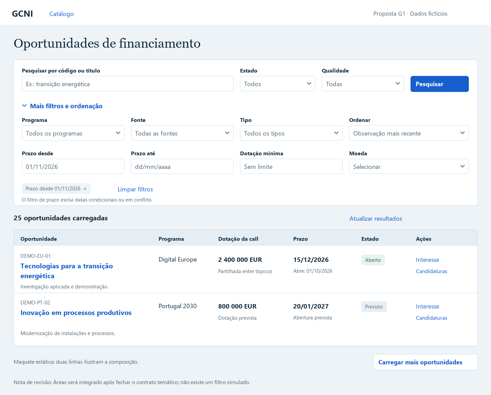
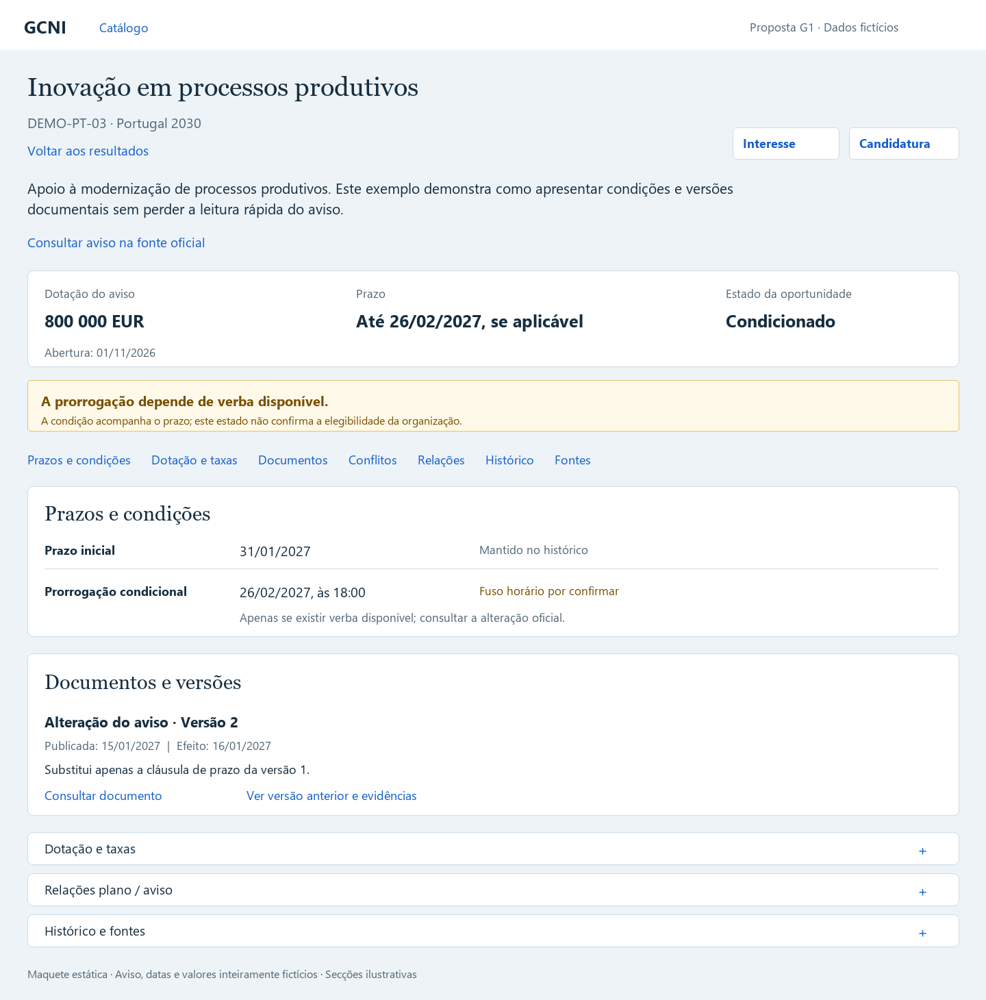
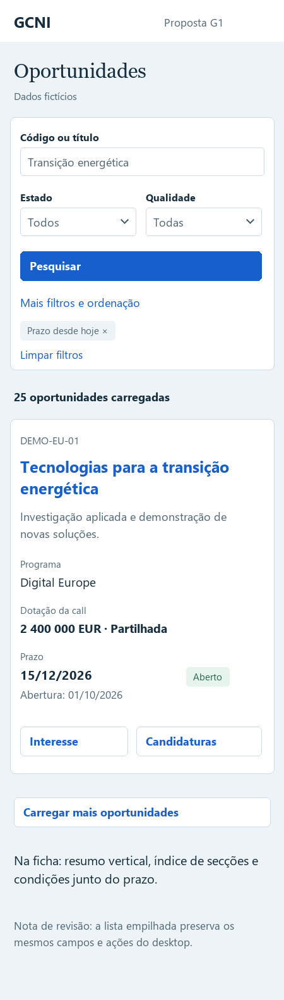

Proposta estática G1. Dados fictícios. Sem implementação, ligação a APIs ou alteração do catálogo.
Decisões visuais · Contrato detalhado de leitura · Exemplos JSON



G1 preparado para revisão. A escolha visual e os parâmetros são propostas concretas; a documentação não declara aprovação humana, implementação ou testes de execução. O contrato temático de Áreas permanece uma dependência própria.